A mi familia
A mis amigos
y a todos aquellos cronopios, famas y esperanzas
que me han permitido llegar hasta aquí
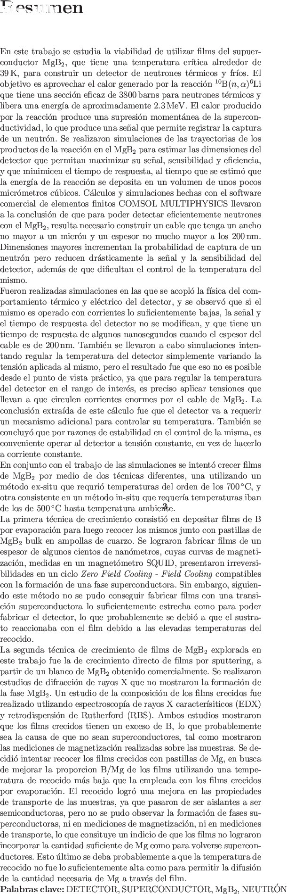
[width=]tecnicas
|
Para detectar neutrones hacen falta elementos que posean una gran sección eficaz de captura de los mismos y utilizar las partículas que se producen en la reacción nuclear como elemento de detección[3], siendo ejemplos de este método de detección los sensores de He gaseoso y BF gaseoso[3]. Dichos dispositivos poseen una gran eficiencia pero tienen el defecto de que sus tiempos de respuesta son lentos (van desde milisegundos a microsegundos) y deben operar en regímenes de alta tensión[3]. Los detectores gaseosos no tienen sensibilidad para distinguir neutrones individuales cuando el flujo de los mismos es muy intenso (sus tasas de conteo máximas son del orden de 10neutrones/s)[3], y requieren un volumen de operación relativamente grande (del orden de cm), lo que hace que no puedan ser utilizados como sensores sensibles a posición[3], y además presentan el inconveniente de que poseen un elevado costo[3]. El He presenta el problema adicional de que es un elemento de importancia estratégica que tiene un reducido número de oferentes en el mundo, por lo que su acceso es restringido.
Dentro de los elementos naturales para la detección de neutrones térmicos, uno de los más interesantes es el 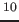B[3], que se encuentra en el boro natural en una proporción de alrededor del 20%, lo que hace relativamente sencillo conseguir B enriquecido. Este núcleo posee una sección eficaz de captura de neutrones térmicos que es la segunda más alta dentro de los elementos utilizados para su detección[3]. Dicha sección eficaz se incrementa al disminuir la energía de los neutrones incidentes. En la Fig. está graficada la variación de la sección eficaz en función la energía, para algunos de los elementos más utilizados en la construcción de sensores de neutrones térmicos y fríos.
está graficada la variación de la sección eficaz en función la energía, para algunos de los elementos más utilizados en la construcción de sensores de neutrones térmicos y fríos.
[width=]secceff
|
Sólo a efectos de comparar, la sección eficaz de captura neutrónica para el B es de 3800barns si los neutrones incidentes tienen una velocidad de 2.20km/s. La sección eficaz del He (uno de los mejores elementos disponibles para la detección de neutrones) en condiciones similares es de 5300barns y la del Li es de 940barns[3]. barnUnidad de área, equivale a 10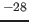m
En este trabajo se propone la construcción de un detector de neutrones sensible a posición utilizando lo que se denomina un sensor superconductor de borde de transición. En las secciones siguientes se dará una breve explicación del fenómeno de la superconductividad y sus aplicaciones como sensores de diferentes tipos de radiación. Posteriormente se comenta el superconductor sobre el que se realizó este trabajo, el MgB, y como se lo puede utilizar para construir un detector de neutrones; y finalmente se hace un repaso de las técnicas de crecimiento utilizadas en la actualidad para fabricar films de MgB, ya que la fabricación de un detector superconductor como el que se va a proponer requiere la fabricación del superconductor en forma de film.
Una característica más fundamental de los superconductores es que la inducción magnética 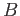 es nula en el interior de los mismos, siempre que el campo aplicado esté por debajo de 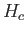. En este sentido se presenta la mayor diferencia entre un superconductor y un conductor perfecto, que sólo anularía campos magnéticos dependientes del tiempo. Un superconductor anula tanto campos estáticos como dinámicos. Este efecto, denominado efecto Meissner, implica que la superconductividad se destruye si el campo aplicado supera . Este campo se encuentra relacionado con el aumento de la energía libre por unidad de volumen del material al pasar al estado superconductor. La estabilidad termodinámica del estado superconductor implica que en presencia de un campo magnético se generan en el superconductor corrientes que apantallan al mismo, de modo que la inducción decae exponencialmente dentro del SC con una longitud característica , denominada longitud de penetración.
Los SC pueden ser clasificados como de baja temperatura crítica (LTCSC) o de alta temperatura crítica (HTCSC), y mientras que en los últimos no existe aún un consenso acerca de cuál es el mecanismo microscópico de la superconductividad, en los primeros, dicho mecanismo encuentra su explicación en el marco de la teoría de Bardeen-Cooper-Schriefer (BCS)[4]. En esta teoría se muestra que una interacción atractiva entre electrones, como la que es resultado de la interacción electrón-fonón en los sólidos, implica la inestabilidad del estado fundamental del mar de Fermi respecto de la formación de pares ligados de electrones con coordenadas de momento y espín iguales y opuestas. Estos así denominados ``pares de Cooper'' tienen una extensión espacial que viene dada por una cantidad denominada longitud de coherencia superconductora 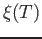, cuyo valor a temperatura cero es
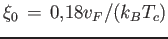, con 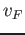 la velocidad de Fermi de los electrones en el material y 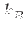 la constante de Boltzmann. Si la temperatura del superconductor se eleva por encima de , la energía térmica 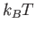 es suficiente para romper los pares de Cooper y la superconductividad desaparece. La misma teoría predice que existe un gap en la densidad de estados de las excitaciones de las cuasi-partículas, denominada energía del gap superconductor  , que se encuentra relacionada con la del superconductor por la ecuación
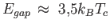Irwin2005.
, que se encuentra relacionada con la del superconductor por la ecuación
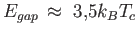Irwin2005.
El ancho de las transiciones superconductoras puede llegar a ser del orden de 1mK, lo que implica que la derivada de la resistencia de un superconductor en función de la temperatura evaluada en puede ser enorme, y esto puede utilizarse para lograr una gran amplificación en la señal obtenida si se utiliza el superconductor como detector. En la sección siguiente se explora con algo más de detalle esta aplicación particular de los superconductores.
TTemperatura.
tTiempo.
Inducción magnética.
Temperatura crítica de un superconductor.
Campo magnético crítico de un superconductor.
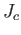Densidad de corriente crítica de un superconductor.
Velocidad de Fermi.
Longitud de coherencia superconductora.
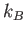Constante de Boltzmann. En el SI vale 1.38 10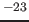J/K.
 Energía del gap superconductor. Es la energía necesaria para romper un par de Cooper.
Energía del gap superconductor. Es la energía necesaria para romper un par de Cooper.
En 1941 Andrew et al midieron el incremento de temperatura producido por una señal de radiación infrarroja en un cable de tantalio[9], lo que constituye el primer uso de un TES como bolómetro. Luego, en 1949, el mismo grupo utilizó niobio para detectar la energía depositada por partículas 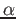, lo que representa el primer trabajo reportado en el que se utilizó un TES como calorímetro[10]. Sin embargo, tuvieron que pasar varias décadas para que los TES empezaran a ser utilizados masivamente, debido a que son sistemas altamente no lineales, lo que trae aparejado problemas de estabilidad y un rango operacional pequeño debido a lo estrecho de la transición superconductora. A su vez, cuando estos detectores son operados a corriente constante, diferencias de a lo largo del sensor hacen difícil su operación debido al calentamiento Joule. Por último, resulta complicado adaptar la impedancia de salida de los TES (que son del orden de algunos o menos) con la impedancia de amplificadores FET (del orden de cientos de M)[5]. La mayoría de estos problemas desaparecieron cuando se incorporaron dispositivos superconductores de interferencia cuántica (SQUID) como amplificadores y se empezó a operar a los TES a tensión constante[11]. Al ser operados a tensión constante y enfriados a temperaturas mucho menores que la crítica, se puede lograr que el sistema auto regule su temperatura[11], ya que el calentamiento por efecto Joule aumenta al disminuir la resistencia. De esta forma, cuando el calentamiento Joule se compensa con la pérdida de calor a través del sustrato, se logra estabilizar al detector a una temperatura determinada. Por otro lado, los amplificadores SQUID se pueden adaptar fácilmente a las impedancias de salida de los TES y permiten operar un gran número de sensores con una cantidad reducida de cables a temperatura ambienteIrwin2005.
Puede demostrarseIrwin1995 que cuando son operados a tensión constante, la señal del TES frente a un pulso de energía decae con una constante de tiempo:
Por otro lado, la operación a tensión constante simplifica en gran medida la fabricación y operación del detector, ya que las no uniformidades, no linealidades y variaciones en van a modificar la forma del pulso de energía emitido, pero no su integral. A su vez, se logra incrementar el rango de operación del detector, ya que si un evento hace que el film o el cable sea completamente normal, todavía se puede medir la energía depositada utilizando la Ec.  , a condición de que la duración del pulso sea mucho menor que 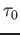. Por último, como la medición de la energía es directa, se puede comparar la energía depositada con la energía incidente de las partículas, permitiendo el cálculo de la eficiencia de colección del detector[11].
, a condición de que la duración del pulso sea mucho menor que 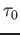. Por último, como la medición de la energía es directa, se puede comparar la energía depositada con la energía incidente de las partículas, permitiendo el cálculo de la eficiencia de colección del detector[11].
La incorporación de los amplificadores SQUID y la operación de los TES a tensión constante, han permitido un incremento explosivo de su uso en las aplicaciones, y actualmente se los utiliza para la medición de radiación a lo largo del espectro electromagnético[5], partículas débilmente interactuantes[5], materia oscura[5], biomoléculas[8,5], y en el campo de la información cuántica[7,5]. En el caso de este trabajo se propone construir un TES para la detección de neutrones, una partícula que interactúa débilmente con la materia y que no produce ningún tipo de ionización. Para ello se planea utilizar el superconductor MgB. TESSiglas en inglés de sensor de borde de transición. Tiempo de relajación natural de un sistema. 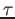Tiempo de relajación de un sistema. 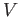Tensión aplicada a un circuito. 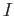Corriente que pasa por un circuito. 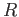Resistencia eléctrica. 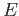Energía depositada en un detector. Capacidad calorífica de un sistema. Vínculo térmico entre un sistema y una fuente térmica. SQUIDSiglas en inglés para dispositivo superconductor de interferencia cuántica.
[width=0.35]estructura
|
El MgB tiene una temperatura crítica 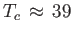K que es notablemente alta para un compuesto con una estructura tan simple, y a pesar de que su es mucho menor que la de los HTCSC[12], la temperatura de transición del MgB es la más alta entre los compuestos binarios conocidos y dentro de los compuestos inorgánicos que no tienen oxígeno[14].
El MgB resulta ser un compuesto muy interesante para las aplicaciones, debido a su larga longitud de coherencia, baja anisotropía y la transparencia de sus bordes de grano al paso de corriente. Constituye un excelente candidato para la fabricación de imanes superconductores y dispositivos electrónicos[12,15]. En los últimos años se han propuesto diferentes técnicas para sintetizar dicho compuesto en numerosas formas (films, cintas, cables, etc.)[12,15,14,16].
En este trabajo se propone estudiar la viabilidad de construir un detector de neutrones utilizando el superconductor MgB. La idea es aprovechar la elevada sección eficaz de captura de neutrones que presenta el B para la reacción[2]:
A partir de analizar el diagrama de fases Mg-B se puede apreciar que el MgB es la fase estable entre temperaturas de 650ºC y 1500ºC siempre y cuando el reactivo en exceso sea el Mg[25], ya que de otra forma se generan en el material fases espurias con exceso de B (MgB , MgB, MgB y MgB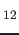) que no son superconductoras[15]. La oxidación del Mg durante la fabricación del film también puede generar este problema, ya que reduce la cantidad de Mg disponible para formar MgB. Estos factores son la principal fuente de impurezas, que debilitan la conectividad de los granos y disminuyen la corriente crítica . La realización de la síntesis del compuesto con exceso de Mg en atmósferas inertes puede reducir la pérdida de Mg, y dado que no existen fases estables en el diagrama Mg-B con exceso de Mg, se evita la formación de fases ricas en B. El uso de tantalio durante la síntesis del MgB es muy común ya que el tantalio absorbe el oxígeno que puede estar presente durante la fabricación del film[26,16,22]. A su vez, también está visto que la adherencia del Mg se reduce con la temperatura del sustrato mientras que la del B se mantiene casi constante con la misma[27], de modo que si se quiere depositar MgB sin realizar un proceso de recocido, la temperatura a la cual ocurre el depósito se vuelve un factor crucial.
, MgB, MgB y MgB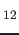) que no son superconductoras[15]. La oxidación del Mg durante la fabricación del film también puede generar este problema, ya que reduce la cantidad de Mg disponible para formar MgB. Estos factores son la principal fuente de impurezas, que debilitan la conectividad de los granos y disminuyen la corriente crítica . La realización de la síntesis del compuesto con exceso de Mg en atmósferas inertes puede reducir la pérdida de Mg, y dado que no existen fases estables en el diagrama Mg-B con exceso de Mg, se evita la formación de fases ricas en B. El uso de tantalio durante la síntesis del MgB es muy común ya que el tantalio absorbe el oxígeno que puede estar presente durante la fabricación del film[26,16,22]. A su vez, también está visto que la adherencia del Mg se reduce con la temperatura del sustrato mientras que la del B se mantiene casi constante con la misma[27], de modo que si se quiere depositar MgB sin realizar un proceso de recocido, la temperatura a la cual ocurre el depósito se vuelve un factor crucial.
Existen diferentes técnicas para depositar films de MgB, que pueden clasificarse como procesos de fabricación in-situ, en donde el MgB se genera en un sólo paso o ex-situ, que consisten en crecer precursores (B, MgB + Mg) que luego son sometidos a algún tratamiento adicional para obtener el producto final. También se puede caracterizar el crecimiento de los films a partir de las temperaturas involucradas para la fabricación, que pueden ir desde T 200ºC hasta T 1000ºC. La técnica a utilizar depende de los sustratos que se deseen utilizar y de las propiedades de film que se deseen obtener (cristalinidad, alta , alta , etc.), que van a estar condicionadas por la aplicación que se le vaya a dar al dispositivo fabricado.
Durante el transcurso de este trabajo se exploraron dos técnicas de crecimiento de films de MgB: la primera consistió en la generación de films de boro por evaporación y un posterior recocido con MgB a temperaturas del orden de los 700ºC. La segunda de las técnicas consistió en intentar crecer películas delgadas de MgB directamente por sputtering.
En el capítulo  se estudian los aspectos que hacen a la sensibilidad del detector y a la optimización del diseño del mismo, calculando el volumen en que se deposita la energía nuclear proveniente de la reacción de captura de un neutrón por el B. Este cálculo se implementó desde dos enfoques diferentes: por un lado se simularon las trayectorias de los productos de la reacción dentro del MgB, utilizando el software SRIM y estimando el volumen en que se deposita la energía a partir de los rangos de los iones producidos en la reacción B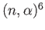Li. Por otro lado, se estudió como se propaga el calor en el MgB cuando se encuentra en contacto con una fuente fría e incorporando el efecto del calentamiento Joule, lo que se logró a partir de realizar simulaciones de elementos finitos. Se analizan también los mecanismos por los cuales la energía de la reacción abandona al volumen de detección y cómo cambia la resistencia de un cable de MgB cuando una región del superconductor se calienta como resultado de la captura de un neutrón. Estos aspectos se relacionan con el tiempo de respuesta y la señal del detector, y también se calcularon realizando simulaciones de elementos finitos, primero considerando los aspectos térmicos y eléctricos en forma independiente, y luego acoplando estos dos aspectos a través del efecto Joule.
se estudian los aspectos que hacen a la sensibilidad del detector y a la optimización del diseño del mismo, calculando el volumen en que se deposita la energía nuclear proveniente de la reacción de captura de un neutrón por el B. Este cálculo se implementó desde dos enfoques diferentes: por un lado se simularon las trayectorias de los productos de la reacción dentro del MgB, utilizando el software SRIM y estimando el volumen en que se deposita la energía a partir de los rangos de los iones producidos en la reacción B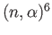Li. Por otro lado, se estudió como se propaga el calor en el MgB cuando se encuentra en contacto con una fuente fría e incorporando el efecto del calentamiento Joule, lo que se logró a partir de realizar simulaciones de elementos finitos. Se analizan también los mecanismos por los cuales la energía de la reacción abandona al volumen de detección y cómo cambia la resistencia de un cable de MgB cuando una región del superconductor se calienta como resultado de la captura de un neutrón. Estos aspectos se relacionan con el tiempo de respuesta y la señal del detector, y también se calcularon realizando simulaciones de elementos finitos, primero considerando los aspectos térmicos y eléctricos en forma independiente, y luego acoplando estos dos aspectos a través del efecto Joule.
En los capítulos subsiguientes se muestran los avances en la búsqueda de crecer films de MgB aptos para construir el detector. En el capítulo  se muestran los resultados que se obtienen al intentar crecer films por medio de una técnica de evaporación de precursores de B que luego son recocidos junto con pastillas bulk de MgB. Este método se caracteriza por ser simple y económico, en los aspectos positivos, y por ser poco reproducible y poco limpio, en los aspectos negativos. Los films obtenidos por este método son luego caracterizados en un magnetómetro SQUID, a través de un proceso estándar que permite determinar la de un superconductor. También se midió el espesor de los films obtenidos utilizando un perfilómetro mecánico de aguja.
se muestran los resultados que se obtienen al intentar crecer films por medio de una técnica de evaporación de precursores de B que luego son recocidos junto con pastillas bulk de MgB. Este método se caracteriza por ser simple y económico, en los aspectos positivos, y por ser poco reproducible y poco limpio, en los aspectos negativos. Los films obtenidos por este método son luego caracterizados en un magnetómetro SQUID, a través de un proceso estándar que permite determinar la de un superconductor. También se midió el espesor de los films obtenidos utilizando un perfilómetro mecánico de aguja.
En el capítulo  se muestran los resultados obtenidos al intentar crecer films de MgB por sputtering, que es una técnica de crecimiento de films de MgB mucho más utilizada para obtener films superconductores aptos para la fabricación de dispositivos. En este caso se intentó crecer directamente films de MgB a partir de un blanco del mismo material obtenido comercialmente, de forma de evitar el paso de recocido, que requiere elevadas temperaturas que pueden degradar la calidad final del superconductor crecido. Para caracterizar las muestras obtenidas se realizaron estudios de diferente índole que permitieron caracterizar diferentes aspectos relevantes de las muestras crecidas, a saber, composición, estructura cristalina, espesor, propiedades magnéticas y propiedades de transporte. La caracterización de la estructura cristalina se intentó realizar a través del análisis de patrones de difracción de rayos X de las muestras crecidas, la cuantificación de la composición se hizo a partir del estudio de los rayos X característicos obtenidos a partir de dispersión de electrones (EDS) y de espectroscopia por retrodispersión de Rutherford (RBS). La medición del espesor de las muestras y de sus propiedades magnéticas se hizo igual que en el capítulo
se muestran los resultados obtenidos al intentar crecer films de MgB por sputtering, que es una técnica de crecimiento de films de MgB mucho más utilizada para obtener films superconductores aptos para la fabricación de dispositivos. En este caso se intentó crecer directamente films de MgB a partir de un blanco del mismo material obtenido comercialmente, de forma de evitar el paso de recocido, que requiere elevadas temperaturas que pueden degradar la calidad final del superconductor crecido. Para caracterizar las muestras obtenidas se realizaron estudios de diferente índole que permitieron caracterizar diferentes aspectos relevantes de las muestras crecidas, a saber, composición, estructura cristalina, espesor, propiedades magnéticas y propiedades de transporte. La caracterización de la estructura cristalina se intentó realizar a través del análisis de patrones de difracción de rayos X de las muestras crecidas, la cuantificación de la composición se hizo a partir del estudio de los rayos X característicos obtenidos a partir de dispersión de electrones (EDS) y de espectroscopia por retrodispersión de Rutherford (RBS). La medición del espesor de las muestras y de sus propiedades magnéticas se hizo igual que en el capítulo  , es decir, utilizando un perfilómetro mecánico de aguja y el magnetómetro SQUID, respectivamente, mientras que las propiedades de transporte se obtuvieron a partir de mediciones estándar de la resistencia de los films crecidos.
, es decir, utilizando un perfilómetro mecánico de aguja y el magnetómetro SQUID, respectivamente, mientras que las propiedades de transporte se obtuvieron a partir de mediciones estándar de la resistencia de los films crecidos.